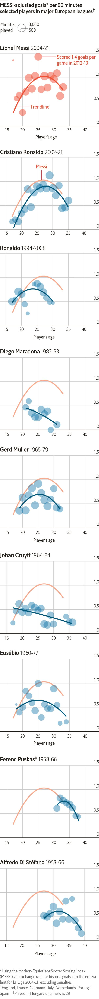
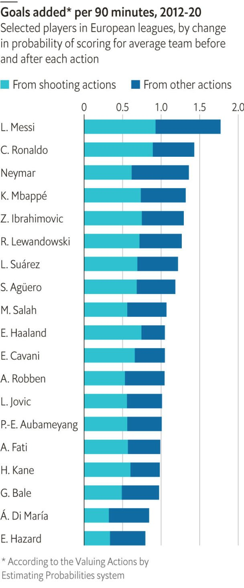
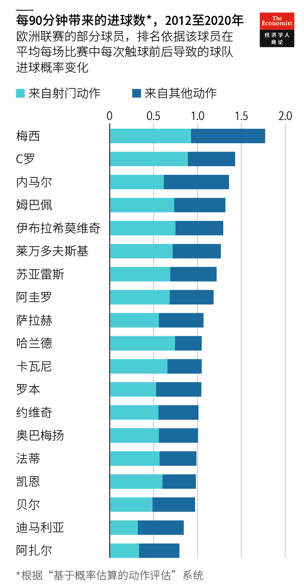

2021-08-27T06:59:16+00:00
Simply the best
谁与争锋
誰與爭鋒
By the numbers, Lionel Messi is European football’s best scorer ever
从数据看，梅西是欧洲足球史上最佳射手
從數據看，梅西是歐洲足球史上最佳射手
Goals make up only half of his value, but his scoring was more impactful than that of other greats
进球只体现了他一半的价值，但他的得分比其他伟大球员更有影响力
進球只體現了他一半的價值，但他的得分比其他偉大球員更有影響力

FOOTBALL’S MOST fruitful partnership has ended in tears. On August 8th a weeping Lionel Messi said he was leaving Barcelona, the club he joined when he was just 13. The Argentine forward has scored a record 474 goals in La Liga, Spain’s top league. His teams have won ten La Liga titles and four Europe-wide Champions League trophies.
足球史上最富成果的一段合作关系在泪水中结束。8月8日，泣不成声的梅西宣布将离开他13岁就加入的巴塞罗那俱乐部。这位阿根廷前锋在西班牙顶级联赛西甲攻入了创纪录的474粒进球。他所在的球队十次夺得西甲冠军，四次问鼎欧冠联赛。
足球史上最富成果的一段合作關係在淚水中結束。8月8日，泣不成聲的梅西宣布將離開他13歲就加入的巴塞羅那俱樂部。這位阿根廷前鋒在西班牙頂級聯賽西甲攻入了創紀錄的474粒進球。他所在的球隊十次奪得西甲冠軍，四次問鼎歐冠聯賽。
Mr Messi offered to slash his salary in order to stay. But Barcelona is deep in debt, and pays 95% of its revenue in wages. La Liga has set a ceiling of 70%, forcing the club to let him go. On August 10th he joined Paris Saint-Germain (PSG), a rich French team.
梅西曾提出愿意大幅减薪以求留下。但巴萨负债累累，薪资支出已达总收入的95%。西甲联赛设定了70%的薪资比例上限，俱乐部只能无奈让他离开。8月10日，梅西加盟法国豪门巴黎圣日耳曼。
梅西曾提出願意大幅減薪以求留下。但巴薩負債纍纍，薪資支出已達總收入的95%。西甲聯賽設定了70%的薪資比例上限，俱樂部只能無奈讓他離開。8月10日，梅西加盟法國豪門巴黎聖日耳曼。
Now 34, Mr Messi may not even be PSG’s top scorer next season. But the only question about his peak in 2009-19 is whether it was the greatest ever. Although historical comparisons are tricky in football, the best available data suggest that it was.
梅西现年34岁，下个赛季甚至未必能够成为巴黎圣日耳曼的头号射手。但有关他在2009到2019年的巅峰期的唯一疑问是它是否是有史以来最伟大的巅峰期。虽然要在足球这项运动中做跨时代的比较并非易事，但现有的最好数据给出了肯定的答案。
梅西現年34歲，下個賽季甚至未必能夠成為巴黎聖日耳曼的頭號射手。但有關他在2009到2019年的巔峰期的唯一疑問是它是否是有史以來最偉大的巔峰期。雖然要在足球這項運動中做跨時代的比較並非易事，但現有的最好數據給出了肯定的答案。
Mr Messi’s standing relative to his contemporaries can be analysed reliably. Today, the location and result of every shot, dribble, pass and tackle are tracked. KU Leuven, a university, and SciSports, an analytics firm, have built a system to measure how each action affects a team’s odds of scoring, by comparing where the ball was before and after a player touched it.
梅西相对于同时代球员的成就可以被可靠地分析出来。今时今日，每一次射门、盘带、传球和抢断的位置和结果都被记录了下来。鲁汶大学（KU Leuven）和数据分析公司SciSports建立了一套系统，通过比较球员触球前后球的位置变化，来衡量他们的每个动作对球队得分机会的影响。
梅西相對於同時代球員的成就可以被可靠地分析出來。今時今日，每一次射門、盤帶、傳球和搶斷的位置和結果都被記錄了下來。魯汶大學（KU Leuven）和數據分析公司SciSports建立了一套系統，通過比較球員觸球前後球的位置變化，來衡量他們的每個動作對球隊得分機會的影響。
In 2012-20, their model reckons that Mr Messi would have boosted an average team’s scoring margin by 1.77 goals per match. Cristiano Ronaldo, his old rival at Real Madrid, came a distant second at 1.43.
据他们的模型估算，从2012年到2020年，梅西每场比赛平均能给球队带来1.77个进球。他曾在皇家马德里效力的老对手C罗以1.43个的成绩被远远抛在第二位。
據他們的模型估算，從2012年到2020年，梅西每場比賽平均能給球隊帶來1.77個進球。他曾在皇家馬德里效力的老對手C羅以1.43個的成績被遠遠拋在第二位。
Comparing Mr Messi with past greats is harder. The only data available for all European leagues before 2000 are goals scored and match results. And not all goals are created equal: scoring rates fell sharply from 1950 to 1970, and goals are easier to come by in weaker leagues.
将梅西与过往的伟大球员相比较就更有难度了。所有2000年之前的欧洲联赛的可用数据就只有进球和比赛结果。而每个进球的含金量并不相同：从1950至1970年进球率急剧下降；在实力较弱的联赛里进球相对容易。
將梅西與過往的偉大球員相比較就更有難度了。所有2000年之前的歐洲聯賽的可用數據就只有進球和比賽結果。而每個進球的含金量並不相同：從1950至1970年進球率急劇下降；在實力較弱的聯賽里進球相對容易。
To level the playing field, we devised an exchange rate called the Modern-Equivalent Soccer Scoring Index (MESSI). For each season in each league, it uses the average number of goals per match and team strength—as measured by the Elo system, which rates clubs based on their results and the quality of their opponents—to estimate how many goals players would have scored under different conditions. For example, in the 1960s Eusébio played in a weak, high-scoring Portuguese league. His goals are worth 37% less than those in La Liga in 2004-21. By contrast, Diego Maradona faced stout Italian defences, making his goals worth 5% more than the modern baseline. (We excluded penalties, which pad some strikers’ stats more than others’.)
为公平起见，我们设计了一套换算率，名为现代等效足球得分指数（Modern-Equivalent Soccer Scoring Index ，简称MESSI即“梅西指数”）。对于每个联赛的每个赛季，这套系统使用每场比赛的平均进球数和球队实力（由根据球队成绩和对手实力得出的Elo评分来衡量）来估算这些球员在不同条件下将能够进多少个球。例如，在1960年代，尤西比奥在实力较弱、进球数较多的葡萄牙联赛踢球，此时他进球的价值要比在2004至2021赛季的西甲联赛进球低37%。相比之下，马拉多纳要面对强硬的意大利防守，因此他的进球价值比现代基线要高5%。（我们将点球排除在外，因为一些前锋的数据会被相对放大。）
為公平起見，我們設計了一套換算率，名為現代等效足球得分指數（Modern-Equivalent Soccer Scoring Index ，簡稱MESSI即“梅西指數”）。對於每個聯賽的每個賽季，這套系統使用每場比賽的平均進球數和球隊實力（由根據球隊成績和對手實力得出的Elo評分來衡量）來估算這些球員在不同條件下將能夠進多少個球。例如，在1960年代，尤西比奧在實力較弱、進球數較多的葡萄牙聯賽踢球，此時他進球的價值要比在2004至2021賽季的西甲聯賽進球低37%。相比之下，馬拉多納要面對強硬的意大利防守，因此他的進球價值比現代基線要高5%。（我們將點球排除在外，因為一些前鋒的數據會被相對放大。）
After these tweaks, the diminutive Mr Messi stands head and shoulders above the competition. At his best, he averaged one goal per 90 minutes. Mr Ronaldo reached 0.9; greats from earlier eras were below 0.8.
经过这些调整后，小个子梅西在竞争中鹤立鸡群。巅峰时期的梅西平均每90分钟进一个球。C罗进0.9球；而更早期的伟大球员不到0.8球。
經過這些調整後，小個子梅西在競爭中鶴立雞群。巔峰時期的梅西平均每90分鐘進一個球。C羅進0.9球；而更早期的偉大球員不到0.8球。
These rankings are far from perfect. They underrate players like Maradona and Johan Cruyff, who were as much creators as finishers. And they cannot capture the value of defenders like Franz Beckenbauer.
这些排名远不算完美。它们低估了马拉多纳和克鲁伊夫这样的球员——他们既能把握机会，也能创造机会。它们也无法反映贝肯鲍尔这种后卫的价值。
這些排名遠不算完美。它們低估了馬拉多納和克魯伊夫這樣的球員——他們既能把握機會，也能創造機會。它們也無法反映貝肯鮑爾這種後衛的價值。
Even among strikers, important data are missing. Ferenc Puskas’s latter years roughly match Mr Messi’s recent seasons. Unfortunately, Elo ratings do not exist for the post-war Hungarian leagues that the young Puskas dominated. Nor are they available for Brazil or America, where Pelé, widely seen as the greatest player of the 20th century, played club football.
即使只在前锋中比，也缺少一些重要数据。普斯卡斯后期的表现可与梅西最近几个赛季相媲美。但遗憾的是，年轻的普斯卡斯雄霸一方的战后匈牙利联赛并没有Elo评分。在巴西或美洲也没有，而在那里的俱乐部踢球的贝利是公认的20世纪球王。
即使只在前鋒中比，也缺少一些重要數據。普斯卡斯後期的表現可與梅西最近幾個賽季相媲美。但遺憾的是，年輕的普斯卡斯雄霸一方的戰後匈牙利聯賽並沒有Elo評分。在巴西或美洲也沒有，而在那裡的俱樂部踢球的貝利是公認的20世紀球王。